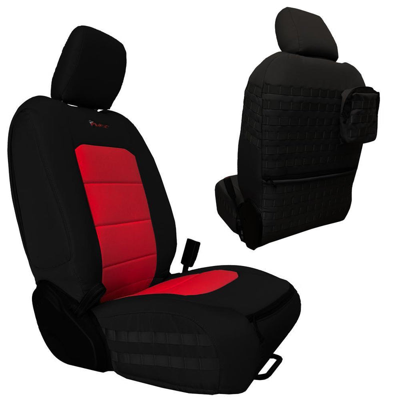

Best Seat Covers for Jeep Gladiator (2026 Buyer's Guide)

The Jeep Gladiator is the spiritual successor to the discontinued Comanche. It's a pickup truck for people who want Jeep's off-road capability with an open truck bed. That combination creates unique seating challenges — the Gladiator cab is tight, the seat geometry is different from regular trucks, and outdoor work demands durable protection.
We've compared seats covers engineered for the Gladiator's JT platform, accounting for the truck's compact cab, aggressive off-road use, and the need for covers that don't interfere with removable door configurations. Here are the six best seat covers for Jeep Gladiator in 2026, ranked from best to good enough.
#1 — Bartact Tactical Seat Covers

Best Overall — Our Top Pick
Bartact custom-engineers their covers specifically for the Gladiator JT platform, accounting for the truck's unique seat geometry and the cab's tight dimensions. These covers feature real MOLLE/PALS webbing panels, so you can attach modular pouches and organizers as your needs change. The base material is UV-protected polyester with waterproof polyurethane backing and high-grade foam. For maximum durability on the trail, upgrade to 1000D Cordura nylon — the same material used in military gear.
Key advantages:
- JT platform-specific fit (2019–2026 Gladiators)
- Real MOLLE panels for modular gear storage
- SRS airbag compatible (critical for door-off operation)
- Made in USA, Berry Amendment compliant
- Works with removable door configurations
- Weatherproof design for truck bed exposure
Shop Bartact Gladiator Covers →
#2 — Smittybilt G.E.A.R.
Smittybilt's G.E.A.R. series is purpose-built for trucks and includes a lot of storage out of the box. Unlike MOLLE (which requires you to buy accessories), G.E.A.R. covers come with multiple fixed pouches and organizers sewn directly to the cover. For Gladiator owners who know exactly what they want to store and don't need flexibility, G.E.A.R. is simpler — just mount and go.
Important pricing note: Smittybilt G.E.A.R. covers are priced per seat, not per row. A pair of front covers costs twice the listed price. Budget accordingly.
#3 — Coverking Ballistic
Coverking offers custom-fit Ballistic nylon covers that are durable and straightforward. Their Cordura-type fabric handles sun, mud, and water without fading as quickly as cheaper materials. No MOLLE system or tactical features — these are pure protection-focused covers for Gladiator owners who want a professional look and aren't interested in modular gear storage.
#4 — Rough Country Neoprene
Rough Country neoprene covers fit the Gladiator well and excel at water resistance. If your Gladiator spends time in wet environments — river crossings, coastal regions, heavy rain country — neoprene is a solid choice. These covers are straightforward protection without tactical complexity. Priced competitively and widely available.
#5 — Diver Down Neoprene
Diver Down specializes in quality neoprene and delivers good fitment for the Gladiator. Their covers are thicker than budget alternatives and handle abuse well. Like Rough Country, these are water-resistant protection — no MOLLE, no extras. Diver Down is worth considering if you want mid-range quality at a reasonable price.
#6 — Wet Okole
Wet Okole neoprene is premium-grade and excels in saltwater environments. If you're running your Gladiator in beach, coastal, or high-salt-exposure situations, Wet Okole's materials resist corrosion better than standard neoprene. These are priced accordingly — a premium for a specific need. Not necessary for inland use.
Quick Comparison Table
| Brand | Material | MOLLE Panels | Custom Fit | Airbag Safe | Made in USA |
|---|---|---|---|---|---|
| Bartact | Polyester / Cordura option | ✅ Real MOLLE | ✅ JT Platform | ✅ | ✅ |
| Smittybilt G.E.A.R. | Polyester | ❌ Sewn pouches | Some models | Varies | ❌ |
| Coverking Ballistic | Cordura-type | ❌ | ✅ | ✅ | ❌ |
| Rough Country | Neoprene | ❌ | ✅ | ✅ | ❌ |
| Diver Down | Neoprene | ❌ | ✅ | ✅ | ❌ |
| Wet Okole | Neoprene | ❌ | ✅ | ✅ | ✅ |
Gladiator-Specific Considerations
The Gladiator's open-air design means more UV exposure than a standard Wrangler. Both driver and passenger seats get intense sun on a truck bed. Choose covers with UV-protected backing — not all neoprene options deliver equal protection.
The Gladiator's removable door configuration means your covers need to be airbag-safe and compatible with the door-off setup. Bartact and most OEM-compatible covers are tested for this; cheap universal covers often aren't.
Mud and water are constants on a truck-bed platform. Water resistance isn't optional — it's essential. Neoprene covers handle this well, but polyester with waterproof backing is equally effective when properly engineered.
Our Verdict
Bartact is the best choice for Jeep Gladiator owners who want real tactical functionality. The JT platform-specific fit, genuine MOLLE panels, and door-off compatibility make Bartact the standout choice. If you plan to add modular gear storage or use your Gladiator for overlanding and adventure work, the MOLLE system justifies the investment.
For a complete breakdown with detailed pros, cons, and fitment notes for each brand, read our full Jeep Gladiator seat cover review.
Find the right covers for your Gladiator year and configuration
Read the Full Gladiator Review →